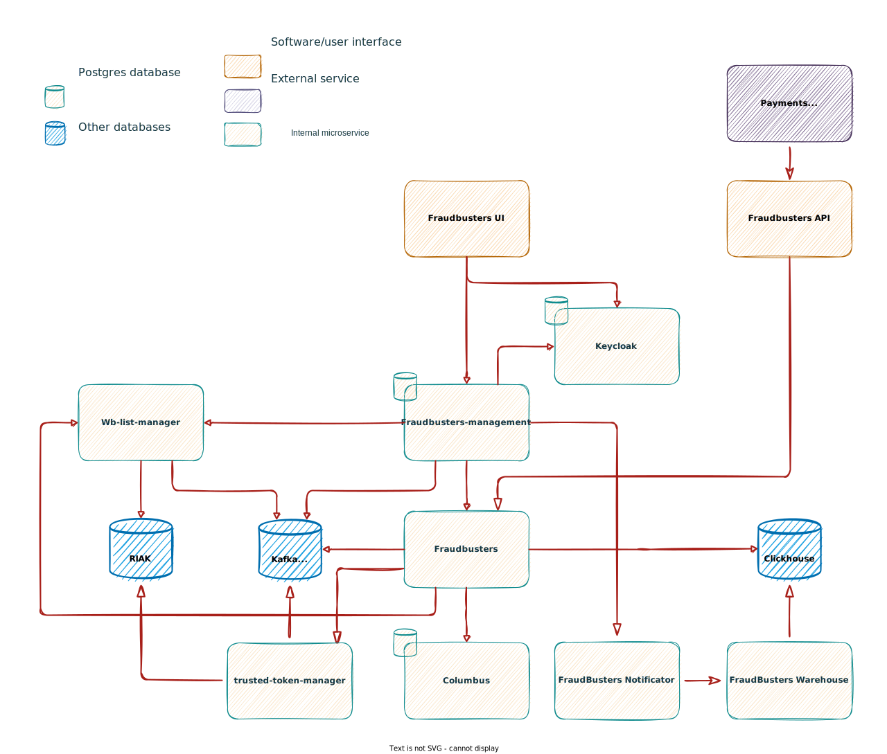

Архитектура

При разработке используется микросервисный подход. Зоны ответственности разделены по функциональным блокам. Основной задачей при построении системы было обеспечить максимальный уровень доступности и возможность горизонтального масштабирования. Для этого критически важные сервисы, были реализованы на основе паттерна event-sourcing. В качестве event-store был выбран kafka-cluster. А в качестве БД выбран basho-riak и clickhouse, которые также предоставляют высокий уровень доступности при хорошей производительности.
Интерфейсы взаимодействия
Для начального погружения необходимо рассмотреть интерфейсы взаимодействия с системой. Это сервисы fraudbusters-ui и fraudbusters-api.
fraudbusters-ui - это пользовательский интерфейс, который позволяет создавать и управлять правилами, черными и белыми списками, группировать и привязывать правила к разным магазинам. Также присутствует все необходимое для аналитики и тестирования гипотиз. Для подробного изучение возможностей можно воспользоваться пробной версией или обратиться к vality.dev за поддержкой.
fraudbusters-api - это сервис реализующий протокол взаимодействия с системой из вашего процессинга. Подробно о спецификации можно узнать в разделе Протоколы. Сервис без состояния легко масштабируется увеличением количества инстансов.
На следующе этапе необходимо ознакомиться со способом авторизации в системе. За нее отвечает свободно распространяемый сервис keycloak, который позволяет настроить SSO, AD и LDAP. На базе него реализована следующая ролевая модель.
Критически важные сервисы
fraudbusters - это ядро системы, занимается управлением оценки транзакции. В рамках данного сервиса реализуются интерфейсы сгенерированные после сборки Fraudo. Взаимодействует с clickhouse для сборки агрегатов, с wb-list-manager для определения нахождения в списках, с columbus для определения местоположения по IP адресу и trusted-token-manager для определения доверия к покупателю. Сервис разработан так, чтобы максимально быстро и просто расширять систему новыми функциями. Для этого необходимо расширить язык и реализовать сервис для новой функциональности.
Далее необходимо рассмотреть уже упомянутые сервисы, реализующие конкретные функции оценки транзакции.
cloumbus - сервис, определяющий местоположение по IP - адресу.
wblist-manager - сервис, предоставляющий возможность создавать записи в черных, белых и серых списках. Сервис слушает команды из fraudbusters-management и создает записи в списках в базе riak, по результату отправляет подтверждение в fraudbusters-management о результате создания, что позволяет поддерживать eventually-consistent для клиента.
trusted-token-manager - сервис, собирающий статистику операций из event-store и предоставляющий гибкий интерфейс для определения доверенного плательщика.
Вспомогательные сервисы
Также реализован ряд сервисов для вспомогательных операций и аналитики.
fraudbusters-management - backend сервис управления всей системой. Через него проходят все запросы от UI, а также запросы на управление сущностями системы, такими как шаблоны, группы и связи. Подробное описание методов можно посмотреть в спецификации.
Создание необходимых для функционирования сущностей (шаблонов, групп, связей и записей в черных/белых списках) производится методом отправки соответствующей команды через event-store (kafka) в ядро системы fraudbusters или в wb-list-manager.
fraudbusters-notificator - сервис, управляющий запланированными операциями по сбору и отправке оповещений. На данный момент реализован канал отправки по почте, но сама реализация подразумевает быстрое расширение под другие каналы.
fraudbusters-warehouse - сервис, отвечающий за аналитические запросы в clickhouse. Реализует следующий протокол.